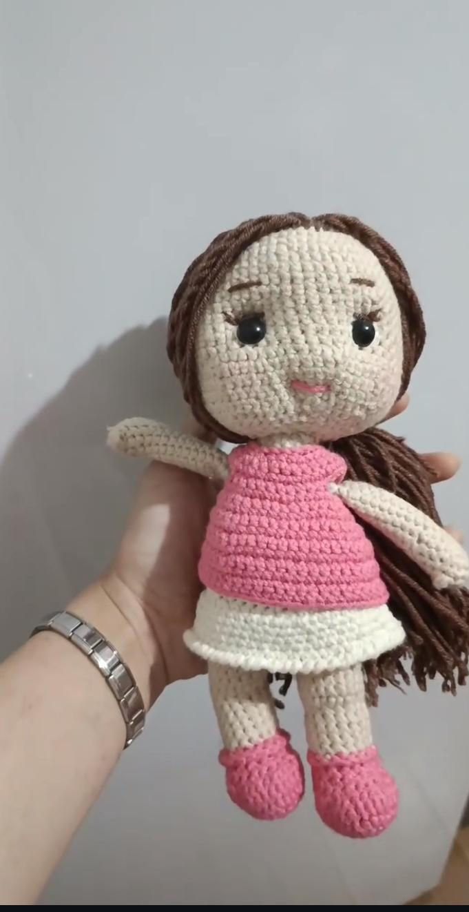
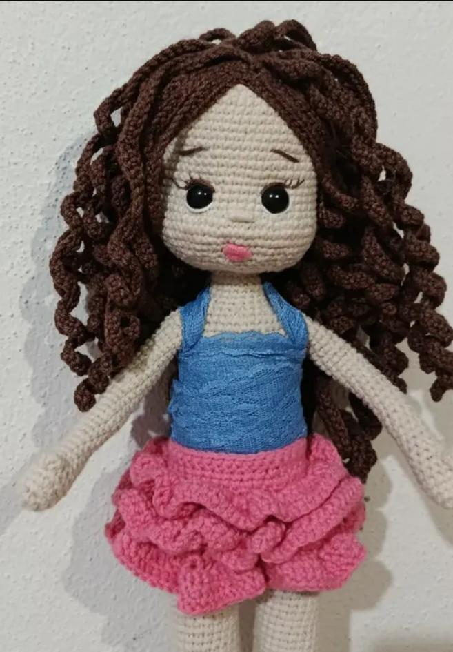

El emeği koleksiyon
Öne Çıkan Ürünler

Anahtarlık
İkili Amigurumi Anahtarlık
₺180

Amigurumi Bebek
Küçük Kız Bebek
₺320

Amigurumi Bebek
İkiz Kardeşler Seti
₺550

Amigurumi Bebek
Örgü Saçlı Kız
₺350